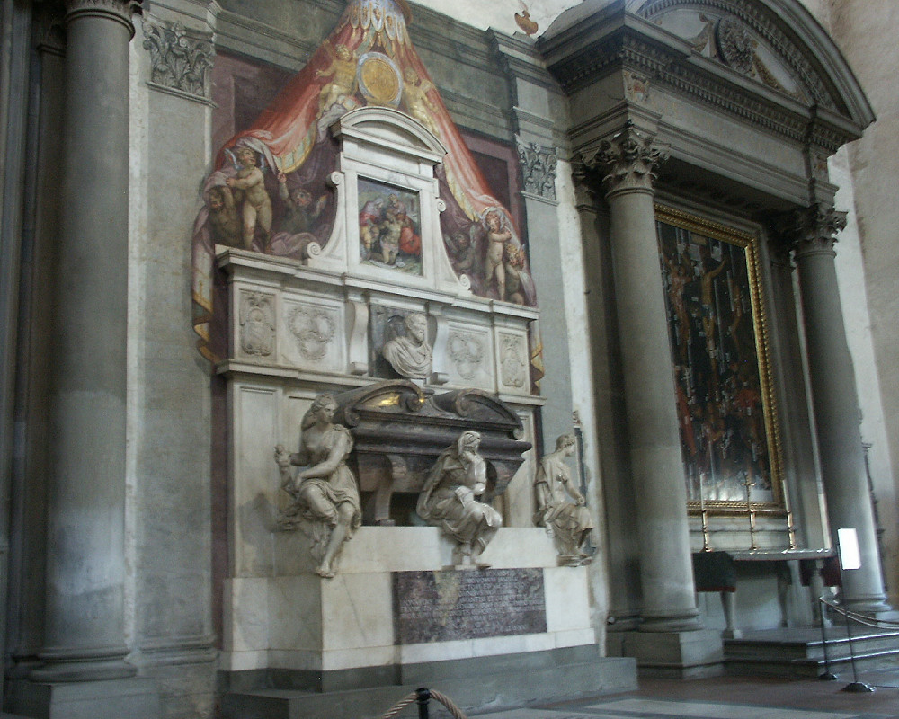

Johnnie and Oberta Baker's Photo Album Previous Gallery Next
|

Michelangelo loved Florence and produced a lot of works there. He is buried in the Santa Croce church along with many other famous people. The three figures sitting on the tomb represent painting, sculpture and architecture. During his life, Michelangelo produced many famous works of art/. Michelangelo's name is synonymous with the Renaissance. Florence Italy is considered to be the birthplace of the Renaissance. |